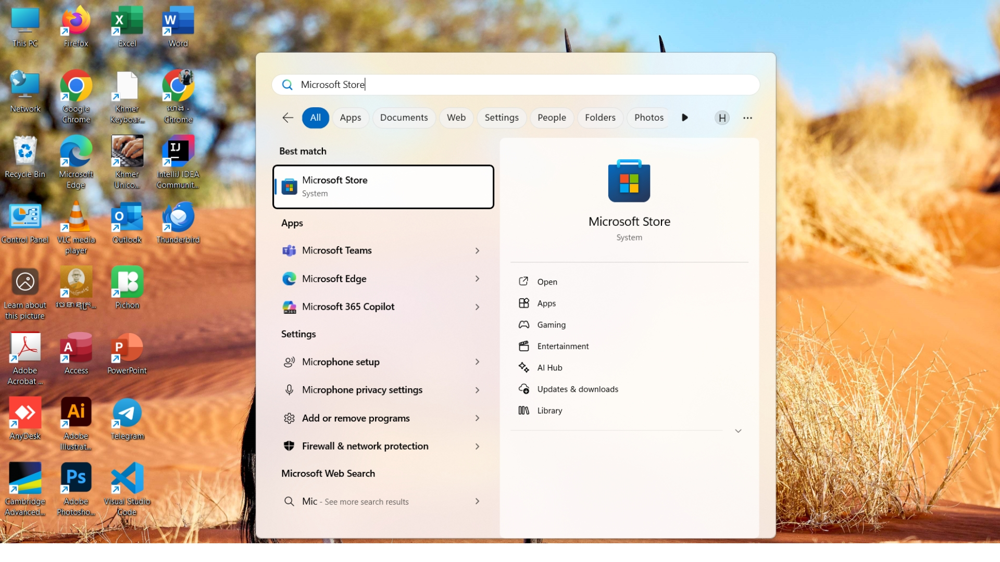
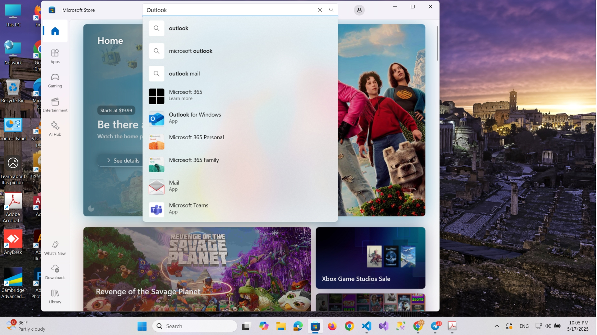
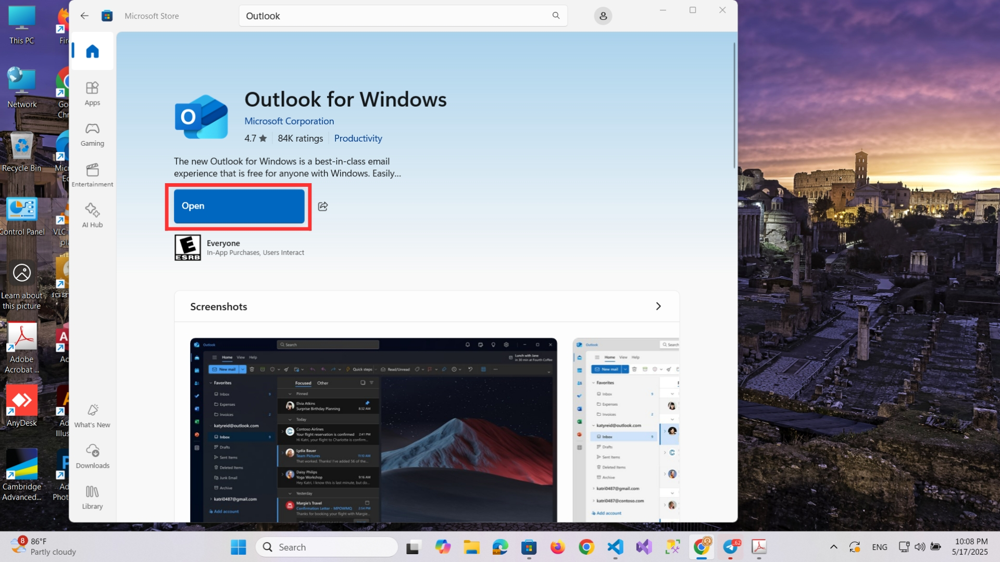
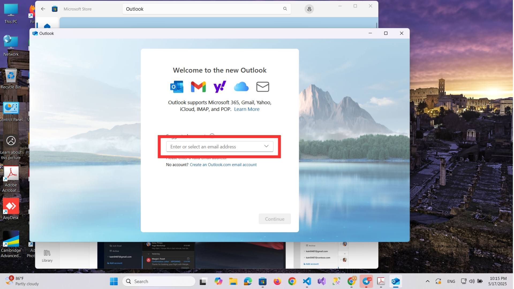
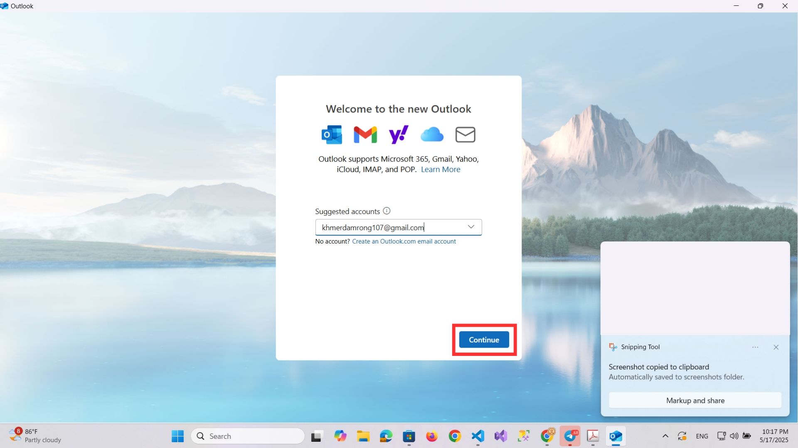
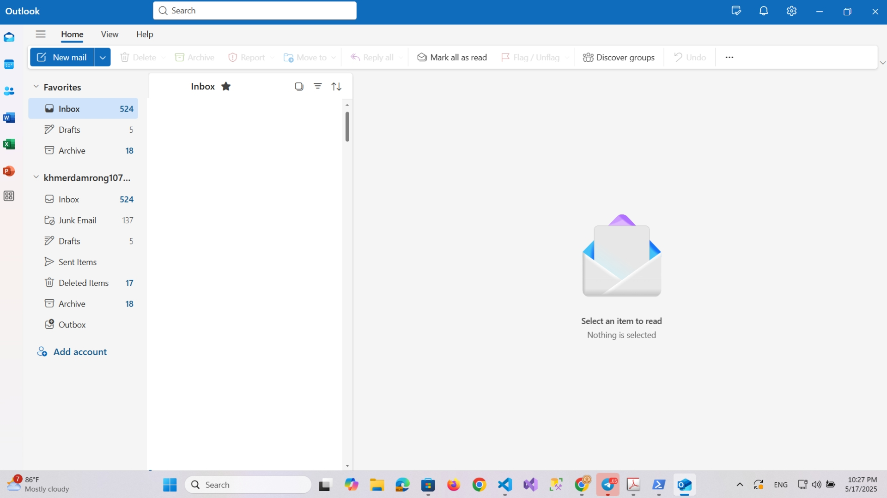

Step 1: Download & Install Outlook via Microsoft Store
1.1 Open Microsoft Store
Click the Start menu and open the Microsoft Store app on your Windows device.

1.2 Search for Outlook
In the Microsoft Store, use the search bar at the top and type Outlook.

1.3 Install Outlook
Select Microsoft Outlook from the search results, then click Get or Install.
Wait for the installation to complete. Once finished, you can launch Outlook directly from the Store or the Start menu.
Step 2: Setup Email Account
2.1 Open Outlook
After installation, launch Microsoft Outlook.
2.2 Start Email Setup
On first launch, Outlook will prompt you to add an account.
Enter your email address and click "Continue".
Congratulations, your account has been successfully added to Outlook!
